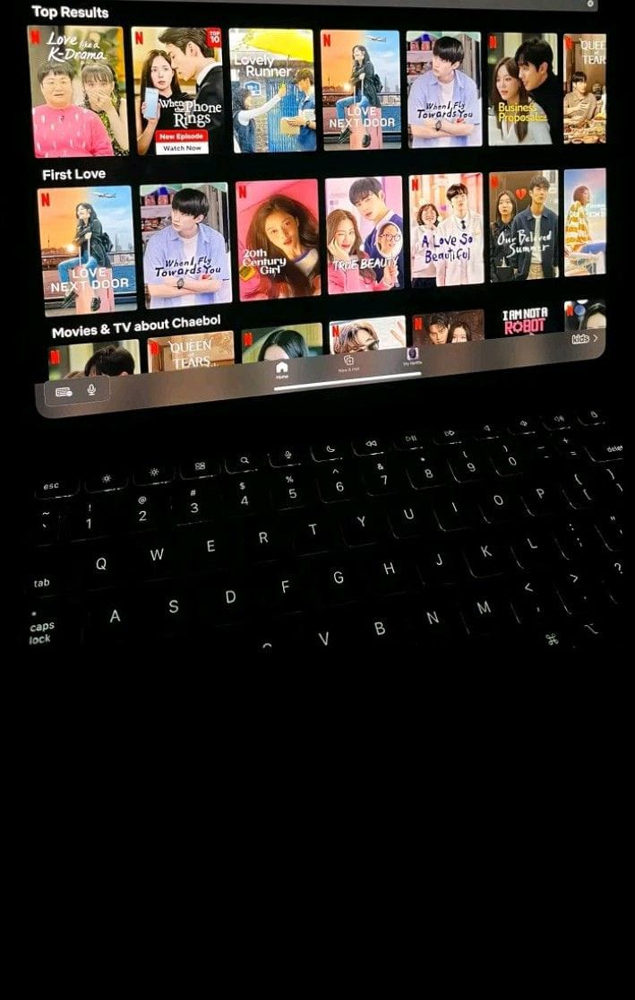

Berbagi film favorit untuk inspirasi dan hiburan 🌸

Website ini dibuat oleh Siti Aisyah untuk menyalurkan hobi menonton film dan berbagi rekomendasi film favorit dengan tampilan menarik. Dibangun menggunakan HTML, CSS, dan JavaScript sederhana untuk menampilkan daftar film beserta rating dan deskripsi singkatnya.